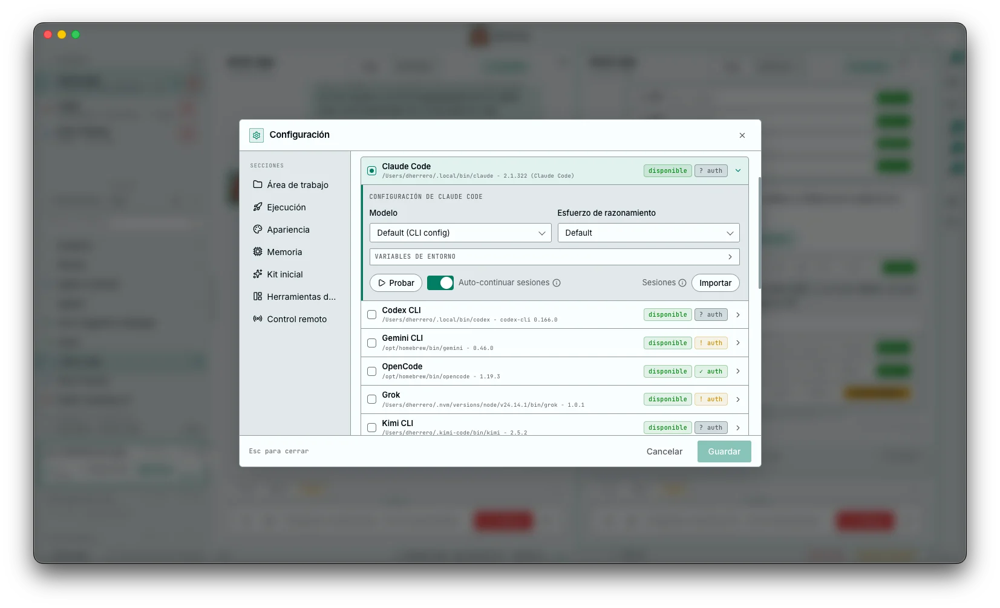

Tus agentes de código en una ventana
Una app de escritorio para dirigir Claude Code, Codex, Gemini y más.

-
Agentes y ejecución
Trabaja con Claude Code, Codex, Gemini CLI, OpenCode, Cursor Agent, Copilot, Grok, Pi, Kimi, Hermes, Qwen, Qoder y DeepSeek, o añade el tuyo si habla ACP. Cambia de agente a mitad de sesión y elige entre plan, apply y apply-yolo.

-
Contexto y memoria
Memoria persistente entre sesiones, historial por proyecto, y contexto, coste y tokens a la vista. Un grafo de código propio da al agente la estructura del proyecto, y code mode ejecuta scripts de solo lectura sobre tus servidores MCP.

-
Método y planificación
Un kanban por proyecto que el propio agente lee y actualiza, con specs, tareas y dependencias. Devia Method guía el trabajo, y las tarjetas interactivas te preguntan, piden aprobar planes o revisar cambios, con cualquier agente.

-
Git y revisión
Estado del repositorio, diffs en línea y cambio de rama. Comenta líneas del diff y se las envías al agente como revisión. Hasta cuatro agentes en paralelo, cada uno aislado en su propio git worktree.
worktree 1worktree 2worktree 3worktree 4
-
Remoto y plataforma
Dirige tus agentes desde Telegram, con envío de ficheros, mientras Devia esté abierto. Terminal integrado, Docker Compose y apertura en tu IDE, en Windows, macOS y Linux.

Todo en tu máquina
- Tus sesiones, memoria, kanban y configuración viven en tu disco (
~/.devia-app/). - Sin cuentas ni nube de Devia.
- Lo único que sale de tu máquina es lo que envía el CLI de cada agente a su proveedor.
Descarga Devia Desktop
Gratis y de código abierto (Apache-2.0), con todas las funciones.